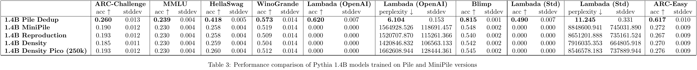

Finding Data Subsets, from Scratch
February 2025 • Reading Time: 7 Minutes
The past decade saw datasets growing exponentially in size, domain coverage and complexity.
This development was made possible by the increasing availability and generation of data, and the compute to produce and process it,
for example in the context of deep learning. Nowadays, private companies conduct training and research on petabyte-scale datasets,
while academia increasingly struggles to keep up with providing resources to conduct training even on terabyte-level datasets.
While the mantra "scaling means improving" drove remarkable advances, it has also sparked an important question: Will
it suffice to just stick to scaling? How much training data is truly necessary?
This exploration leads down a path of investigating dataset distillation techniques.
Specifically, we will be focusing on reproducing, improving and musing about implications of the MiniPile approach.
You can find the code for this project on GitHub.
Distilling knowledge from the deduplicated Pile
The premise seems deceptively simple: We are given a large dataset, EleutherAI's deduplicated Pile.
Compared to training on the big dataset, is it possible to sample a substantially smaller subset of the deduplicated Pile
that would be able to preserve the capabilities in models trained on it?
Jean Kaddour's work on MiniPile indicates that this is indeed possible. By producing MiniPile, Kaddour achieved
competitive performance to The deduplicated Pile with just $\sim 1\%$ of the unedited, original dataset. But, given this
idea as basis, can we replicate this? And if so, could we push this further? And, more importantly, would perceived
effects of MiniPile and potential improvements hold across different model sizes?
Reproducing MiniPile
First, we need to reproduce the pipeline that builds MiniPile.
MiniPile draws meaning from text data by means of embeddings. These embeddings serve as proxies for each text's syntactic
and semantic content. Each text is embedded into a $768$-dimensional numeric vector. Jean Kaddour's work used the embedding model
E5-Large for this. We deviate and use E5-Base-4k with a context size of $1024$ instead of $512$ for more speed.
The core idea behind Kaddour's MiniPile is the utilization of the proxy embeddings by means of their geometric expressiveness.
In other words, it is the geometric similarities between the vectors that we interpret as indicators for each represented text's
properties. And, sticking with that notion, a text's uniqueness can be measured by the distance of its embedding to other embeddings
in the dataset. Embeddings that turn out to be closer together in the $768$-dimensional embedding space will be assumed to represent
texts more similar to one another, content-wise. With the embedding process in full swing across the full, deduplicated Pile,
producing one vector per text example, we can go on to prepare $k$-Means clustering for the produced embeddings.
Kaddour set $k=220$, as the deduplicated Pile was assembled from $220$ topically different, smaller datasets originally.
This effectively aims to reverse the piling together by making groups of data contents distinguishable as such again.
During clustering, additionally, we construct a file containing $10$ text examples (excerpts of them) represented by the
farthest and closest embeddings per identified centroid,
as well as the total count and average distance of embeddings to their assigned cluster centroid.
Another factor as to why we cluster in the first place concerns that we can ensure a preservation of diversity from clusters we
elect to retain, while unwanted, noisy, derogatory or otherwise uninformative content can be excluded in bulk.
In fact, that's exactly what we do next. With the clustered dataset and the $20$ retrieved texts per cluster, we now
manually audit the texts and based on them, disregard a cluster for further processing if example texts fit into
the categories for excludable clusters as layed out in the MiniPile paper:
- Near-duplicate documents,
- Pornography,
- Webpage navigation bars,
- Product specifications, and
- Lists of named entities.
Kaddour excluded $38$ clusters with this method. We adhered to this number.
Notably, despite our deviation from the original embedding model,
we could find distinct clusters for all the described categories. With the assembled list of $38$ excludable clusters,
we go on to randomly sample a total amount of $1,010,500$ examples
($1e6$ train : $500$ val : $1e4$ test) from across the remaining clusters, to equal parts from each cluster.
This selected subset ultimately forms our "MiniPile Reproduction" dataset.
While we had to make some compromises for practical reasons, our reproduction achieved closely comparable results
to the original MiniPile when trained accordingly on a decoder-only Pythia 160M, with multiple benchmarks even showing slight
improvements. A promising start!
Exploring and improving
Can we do better than MiniPile, though?
We go on to test a variety of differently informed, differently focused sampling strategies, as well as a raised cluster resolution of
$k = 220 \times 2 = 440$ for more detailed exclusion of $38 \times 2 = 76$ clusters.
I focus on this particular part of the pipeline for improvement for the downstream ease of its applicability in
low-resource settings. And still, intuitively, mending the sampling of examples for a more informed selection can potentially
yield significant performance gains.
With size-density-proportionate sampling, I found an improvement. This modified sampling technique
weighs both cluster size and cluster density when selecting samples from the non-exlcuded clusters.
The formula for the cluster proportion, by which we would then randomly sample the calculated amount, is given by:
$$\text{Cluster Proportion}_i = \frac{|C_i|}{|\bigcup_j C_j|} \cdot (1 - \omega \cdot \rho(C_i))$$
Here, $|C_i|$ is the cluster size, $\rho(C_i)$ is the cluster density, and $\omega$ is our tunable parameter that controls
the influence of density on the sampling process. This approach was particularly motivated by an information-theoretic intuition:
Dense regions in the embedding space likely represent common, well-understood text patterns, while sparse regions might indicate
unique or specialized, rare knowledge. By balancing between the weight of the presence of these regions, we can aim at capturing
both fundamental patterns while still explicitly encouraging to consider diverse edge cases alike.
Motivated by the results, I scaled down the size-density-sampled dataset size from $946k$ to $250k$ examples.
The original MiniPile, aswell as the size-density-sampled and the pico-size-density-sampled MiniPile
were trained on with a Pythia 160M and a Pythia 1.4B model.

Surprising Discoveries
Unintuitive findings emerged from training across the two Pythia model sizes, revealing unexpectedly nuanced relationships between dataset size, model capacity, and performance.
Non-Linear Scaling Effects
The training runs revealed unexpected relationships between dataset size and model performance.
Benchmark performance did not degrade linearly with dataset size reduction. Instead, some
capabilities showed threshold effects on Pythia 160M, maintaining some strength until dropping
with ablation studies where I ran training for longer, suggesting overfit.
Certain benchmarks (like WinoGrande) showed resistance
to dataset size reduction. BLiMP scores suggested fundamental reasoning capabilities
to persist even with dataset size reduction.
On Pythia 1.4B, the pico-size-density-proportionate
MiniPile beat all other distillates on a majority of the benchmarks. Indeed, the small dataset
beat not only the original MiniPile, but also the standard-sized density-proportionate MiniPile.
Density-Performance Paradox
The relationship between cluster density and performance revealed interesting patterns. Favoring dense clusters wouldn't result in more informative distillates. Instead, mixed sampling from considering both dense and sparse regions outperformed pure strategies. I believe the optimal density ratio to vary by task type, as language modeling capabilities showed different density sensitivity than reasoning tasks.
The Emergence of "Sweet Spots"
Intriguingly, there appears to be a notion of optimal data-to-parameter ratios. This seems to have been skipped over by
simply scaling the dataset until now. We presume "sweet spots" to exist, suggesting that for given model architectures,
there might be an ideal distillate size, attainable by balancing the efficiency of feature extraction, the memorization
capacity, and the target reasoning capability.
This implication would have particularly interesting implications e.g. for curriculum learning approaches, where we might want
to carefully control the complexity, volume and precise impact of training data at different stages of the learning process.
Different tasks showed distinct optimal conditions. Reasoning tasks preferred balanced density sampling, and language modeling
tasks showed higher tolerance for dataset size reduction. Some tasks showed better transfer with specific cluster compositions.
An optimal dataset size, in the end, seemed to vary depending on task type.
Future Directions
While this work demonstrated several promising approaches to dataset distillation, it also revealed some fundamental limitations of current (proxy-based) geometric distillation methods. Some promising directions for future research include:
- Semantic Deduplication: Incorporating more sophisticated semantic similarity measures could help identify truly redundant information beyond surface-level patterns.
- Dynamic Sampling: Developing methods that adaptively adjust sampling strategies based on model capacity and training progress.
- Cross-Dataset Generalization: Investigating how well these techniques transfer to other large-scale text corpora, particularly those with different structural characteristics from The Pile.
Conclusion
With our exploration into dataset distillation with the MiniPile approach coming to an end, it reveals that the relationship between
data quantity and model quality is more nuanced than previously thought. We've shown that careful sampling strategies can
maintain impressive performance with remarkably little data, particularly for medium-sized models.
The practical implications extend beyond academic interest. As the field continues to grapple with the
computational and environmental costs of training large language models, techniques for efficient dataset distillation
become increasingly necessary and valuable.